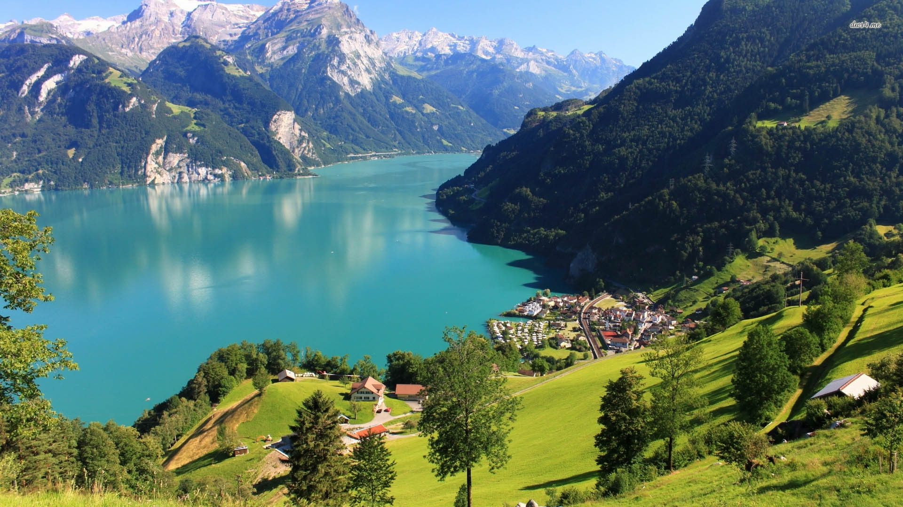
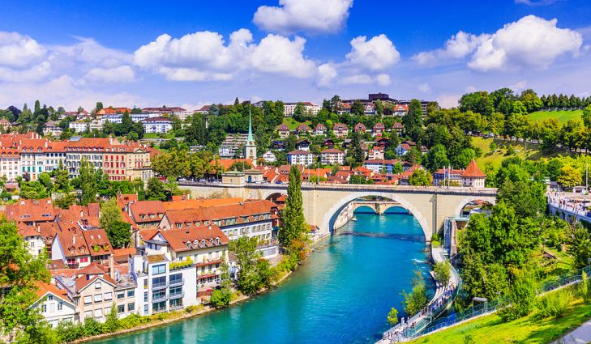
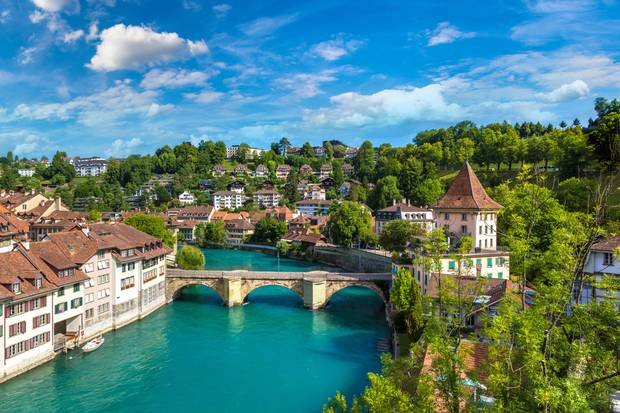

<div class="container project-view">
    
	<div class="row">
        <div class="col-md-4 project-images" align="center">
            
		</div>
		
        <div class="col-md-4 project-images" align="center">
		    
		</div>

        <div class="col-md-4 project-images" align="center">
            
		</div>
		

 		<div class="col-md-12">
            <div class="project-info">
                <h2>Switzerland 7N 8D - Grand Train Tour</h2>

                <div class="details">

                    <div class="info-text">
                        <span class="title">Category</span>
                        <span class="val">Honeymoon</span>
                    </div>
                    
                    <div class="info-text">
                        <span class="title">Price</span>
                        <span class="val">INR 2,04,00 per couple</span>
                    </div>

                    <div class="info-text">
                        <span class="title">Inclusions</span>
                        <span class="val">Accomodation, Breakfast, Swiss Transfer Ticket Combi (8 transfers) – 2nd Class</span>
                    </div>
                    
                </div>

				<span class="val">Itinerary</span>
				
				<br/><br/>
				Day 1 : Swiss Border or Airport – Interlaken: Rail journey from Zurich Airport via Lucerne to Interlaken. Rest of the day free at leisure. Overnight in Interlaken.

				<br/><br/>
				
				Day 2: Interlaken: After breakfast a highlight of your visit to Switzerland awaits you. Enjoy a journey to the Jungfraujoch – Top of Europe. The highest railway station in Europe is located 3454 m/11’333 ft. Visitors gain access to a high-Alpine wonderland of ice, snow and rock, which they can admire from the viewing platforms on the Aletsch Glacier or in the Ice Palace. The railway journey to the Jungfraujoch is an experience which leads through the Eiger and the Mönch. At the Eismeer and Eigerwand intermediate stations, visitors can enjoy the wonderful view from the Eiger North Face. And don’t miss following Junfraujoch – Top of Europe attractions:
				Alpine Sensation: The Alpine Adventure Trip
				Sphinx – 3571m above sea level: Sphinx – the most breathtaking views from the Top of Europe Jungfrau Panorama: 4-minute 360° Jungfrau region cinema experience
				Lindt Swiss Chocolate Heaven: The Lindt & Sprüngli Adventure World at the highest elevation
				Ice Palace: A unique world of ice in the heart of the Jungfraujoch
				Snow Fun – Top of Europe: Fun and games in the world of glaciers. Overnight in Interlaken. (B)

				<br/><br/>

				Day 3: Interlaken – Montreux: Train ride to Zweisimmen. Change to the GoldenPass Panoramic train (or optional GoldenPass Classic) for this memorable trip to Montreux on the shore of Lake Geneva. You find yourself among alpine forests, bubbling mountain springs and picturesque mountain villages. Overnight in Montreux. (B)

				<br/><br/>

				Day 4: Montreux – Zermatt: Today you board the train to Zermatt, the marvellous alpine resort at the foot of the majestic Matterhorn. Overnight in Zermatt. (B)

				<br/><br/>

				Day 5: Zermatt – St Moritz: Board the Glacier Express and enjoy one of the greatest rail journeys in the world. The Glacier Express takes you across 291 bridges, through 91 tunnels and across the Oberalp Pass at 2033 m to St. Moritz. Overnight in St. Moritz. (B)

				<br/><br/>

				Day 6: St. Moritz – Lugano: The Bernina Express of the Rhaetian Railway takes you along its the UNESCO World Heritage route. Enjoy an Alpine switchback ride, taking you from a land of towering glaciers to one of swaying palms. Overnight in Lugano. (B)

				<br/><br/>

				Day 7: Lugano – Lucerne: Train journey from Lugano to Lucerne. Experience the new Gotthard Base Tunnel – with its 57 kilometres it is the longest train tunnel in the world. It takes only 17 minutes to travel this fast flat-track route under the Alpine massif in the heart of Europe. Overnight in Lucerne. (B)

				<br/><br/>

				Day 8: Depart Lucerne – International Airport or Swiss Border: Return to Swiss border or airport or continue your stay in Switzerland at your own request. (B)

				<br/><br/>
				<br/><br/>


				<span class="val">Cancellation Policy</span>
				<br/><br/>

				Bookings Cancelled before 30 day &amp; upto 18 days prior 1st night of hotel stay will incur EURO 60 per file. 
				If cancelled between 17 days and 11 days before 1st night of hotel stay will incur 50% of the total package cost. 
				If cancelled within 10 days before 1st night of hotel stay OR No-Show will incur 100% of the total package cost. 
				Modification fees (possible upto 2 days before 1st night of hotel stay will incur EURO 60 (flat fee) on any change (such as travel dates, hotels, additonal nights, upgrades, downgrades) made on existing booking.

            </div>
        </div>
    </div>
</div>